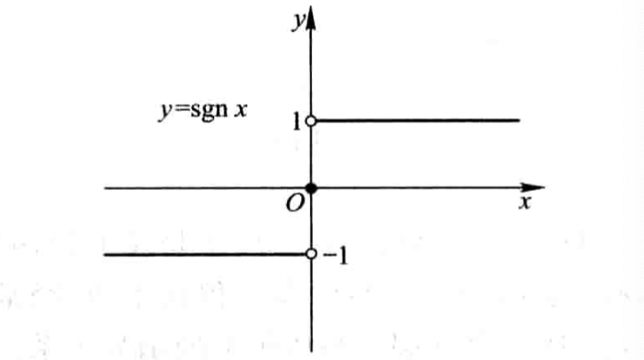
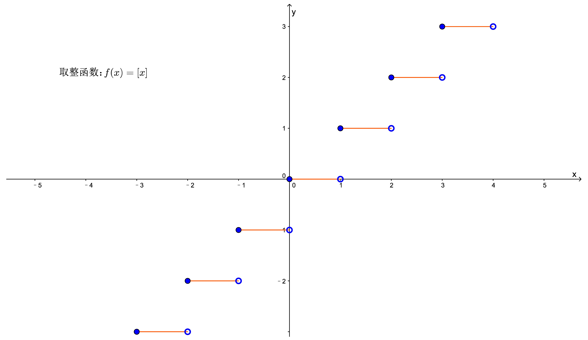
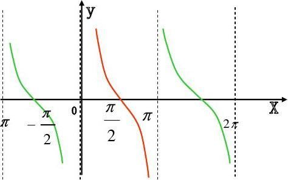
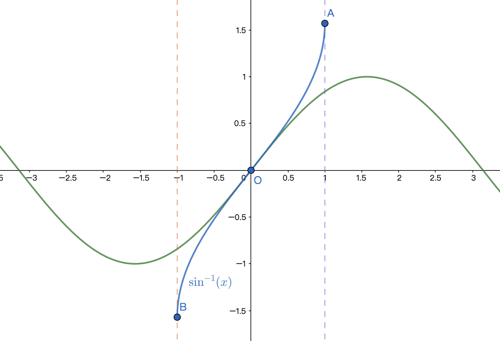
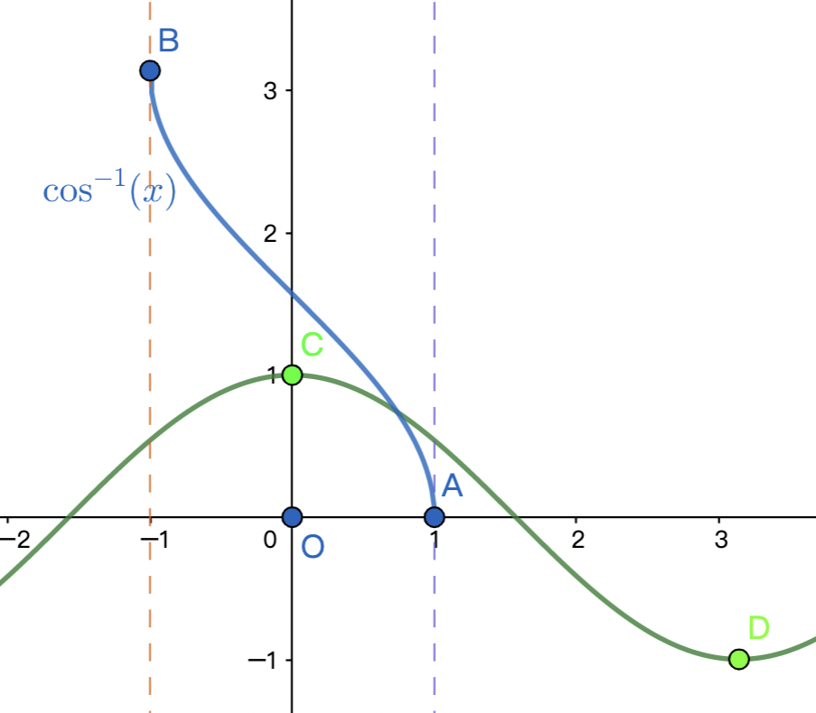
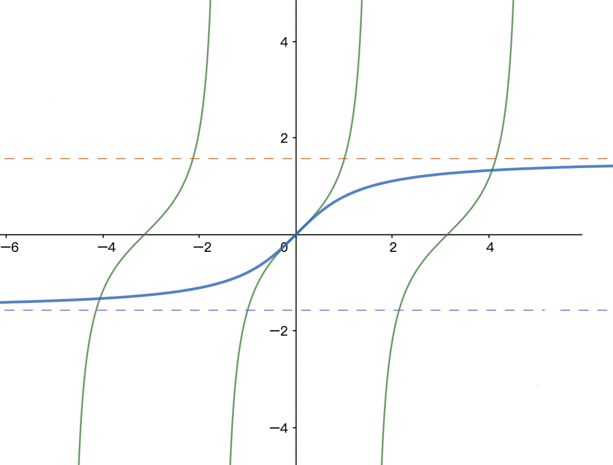

函数的概念
设数集D⊆R，则称映射 f:D→R 为定义在 D 上的函数，记为：
y=f(x), x∈D
D 称为 定义域，记作 Df，即：Df=D 。
函数值f(x)的全体所构成的集合称为函数f的 值域，记作 Rf 或 f(D)，即：
Rf=f(D)={y ∣ y=f(x),x∈D}
-
函数是一种特殊的映射：数集 → 数集。
-
因变量 y 与自变量 x 之间的这种依赖关系，称为 函数关系。
至于自变量、因变量用什么字母表示，不影响函数本质。
-
函数的要素：定义域Df 和 对应法则f。
两个函数相同 当且仅当 这两个函数的定义域相同且对应法则也相同。
若一个函数没有显式给出定义域，则通常约定该函数的定义域就是使函数有意义的一切实数组成的集合，称其为函数的自然定义域。
函数的性质
-
有界性（指 y值在某个区间上有界）
设 X 是函数 f 定义域的某子集，
-
若 ∃K1，使得 ∀x∈X，都有 f(x)≤K1，则称 f在X上有上界，K1是f在X上的一个上界。
-
若 ∃K2，使得 ∀x∈X，都有 f(x)≥K2，则称 f在X上有下界，K2是f在X上的一个下界。
-
若 ∃M>0，使得 ∀x∈X，都有 ∣f(x)∣≤M，则称 f在X上有界。
若这样的 M 不存在，则称 f在X上 无界。即：∀M>0，∃x0∈X，使 ∣f(x0)∣>M。
有界函数的上界、下界有无穷多个，但上确界、下确界是唯一的。
例题1：证明\(f(x)=\sin^{80}x-6\cos^{60}2x\)有界。

例题2：证明\(f(x)=\frac{x}{1+x^2}\sin x\)有界。

例题3：证明\(f(x)=\frac{1}{\sqrt{x}}\)在\((0,1]\)上无界。

分析法：若满足"A⇒B"，则要证B成立，只要证A成立。
-
单调性
对于区间 I⊆D 上的任意 x1,x2，若 x1<x2，恒有 f(x1)<f(x2)，则称 f(x) 在 I 上是单调增加的。
-
周期性
若存在一个正数 T，使得 ∀x∈D 都有 x±T∈D，且 f(x+T)=f(x)，则称函数f为周期函数。
并非每个周期函数都有最小正周期。（狄利克雷函数）
-
奇偶性
- 奇函数：f(−x)=−f(x)，图像关于 原点 对称。
- 偶函数：f(−x)=f(x)，图像关于 y轴 对称。
若函数 f(x) 的定义域为 (−l,l)，则必存在(−l,l)上的偶函数g(x)和奇函数h(x)，使得：g(x)+h(x)=f(x) 。
证明：

一些特殊函数
-
符号函数
y=sgn x=⎩⎨⎧−1,0,1,x<0x=0x>0
性质：x=sgn x⋅∣x∣

-
取整函数
y=[x], x∈R 称为取整函数，[x]表示不超过x的最大整数，即：x−1<[x]≤x。
推论：[x]≤x<[x]+1。

-
狄利克雷函数
D(x)={1, x是有理数0, x是无理数
特点：是周期函数，但不存在最小正周期（任何正有理数都是它的周期）。
-
幂指函数
已知 u(x)>0，则 y=u(x)v(x)=elnu(x)v(x)=ev(x)lnu(x)
若A>0，则A=alogaA (a>0且a=1)。特别的，a=e时，A=elnA。
反函数
定义：设函数 f:D→f(D) 是单射，则称逆映射 f(D)→D 为函数f的反函数。（将原函数称为 直接函数。）
只有单射函数才有反函数。单射函数中自变量x与因变量y之间是一种一一对应的关系，从而值域中的任意一个y都唯一对应着一个x，这便形成了一个新的函数，即反函数。
f 和 f−1 描述的是2个不同的函数。（f−1只是一个记号）
原函数的值域即反函数的定义域，反函数的值域即原函数的定义域。

性质：f(f−1(y))=y， f−1(f(x))=x （从映射角度理解）
y=f(x)与x=f−1(y)描述的是同一个曲线；y=f(x)与y=f−1(x)的图像关于y=x对称 。
证明
若\(P(a, b)\) 是 \(y=f(x)\) 图像上的点，则有：\(b=f(a)\)。由反函数的定义有：\(a=f^{-1}(b)\)，因此 \(Q(b,a)\) 是 \(y=f^{-1}(x)\) 图像上的点。反之同理，若 \(Q(b,a)\) 是 \(y=f^{-1}(x)\) 图像上的点，则 \(P(a, b)\) 是 \(y=f(x)\) 图像上的点。而 \(P(a,b)\) 和 \(Q(b,a)\) 是关于直线\(y=x\)对称的。
对于反函数的理解应基于集合间的 映射，f与f−1表示的是两个互逆的映射（对应关系）。若定义域相同，由于对应关系不同，因此生成的函数也不同。
单调函数一定是单射，因此单调函数一定有反函数，且反函数也是单调函数。事实上，单调递增（递减）函数的反函数也单调递增（递减）。
证明
若 \(f\) 是定义在 \(D\) 上的单调递增函数，任取 \(y_1,y_2\in f(D)\)，且 \(y_1< y_2\)，则在 \(D\) 内存在唯一的 \(x_1,x_2\) 使得 \(f(x_1)=y_1\)，\(f(x_2)=y_2\) 。因此 \(f^{-1}(y_1)=x_1\)，\(f^{-1}(y_2)=x_2\) 。
若 \(x_1>x_2\)，则 \(y_1>y_2\)；若 \(x_1=x_2\)，则 \(y_1=y_2\)。上述2种情况都与假设的\(y_1< y_2\)不符，因此一定是 \(x_1< x_2\)，即 \(f^{-1}(y_1)< f^{-1}(y_2)\)，这就证明了 \(f^{-1}\) 在 \(f(D)\) 上是单调递增的。
（从几何角度看，关于 \(y=x\) 对称的2个函数图像 的单调性相同。）
反之，具有反函数的函数不一定单调。例如：y=x1具有反函数，但并非单调函数。一些由离散点构成的函数也具有反函数，但却不一定具有单调性。
复合函数
定义：设y=f(u),u∈Df，w=φ(x),x∈Dφ，若Rφ⊆Df，则由下式确定的函数：
y=f(φ(x)), x∈Dφ
称为由 φ 和 f 构成的复合函数 （先 φ 后 f ），记为 f∘φ，即：
f∘φ (x)=f(φ(x))
φ 和 f 能构成复合函数 的条件：Rφ⊆Df ，否则不能构成。
基本初等函数
三角函数
-
余切函数：y=cotx=tanx1, x=kπ,k∈Z

-
正割函数：y=secx=cosx1, x=kπ+2π

-
余割函数：y=cscx=sinx1, x=kπ

常用公式：
1+tan2x=cos2x1=sec2x1+cot2x=sin2x1=csc2x
反三角函数
-
反正弦
函数y=sinx, x∈R不是单射函数，因此不存在反函数；但y=sinx, x∈[−2π,2π]上是单射函数，因此该函数具有反函数，记为：y=arcsinx，定义域为[−1,1]，值域为[−2π,2π]。

-
反余弦
y=cosx,x∈[0,π]的反函数记为：y=arccosx，定义域为[−1,1]，值域为[0,π]。

-
反正切
y=tanx, x∈(−2π,2π)的反函数记为：y=arctanx，定义域为R，值域为(−2π,2π)。

5种基本初等函数：指数函数、对数函数、幂函数（包含常数函数）、三角函数、反三角函数。
初等函数：由基本初等函数经过有限次四则运算或复合得到 并 可用一个式子表示的函数。（一般情况下，分段函数是非初等函数。）
某些分段函数可以由函数复合得到，譬如绝对值函数y=∣x∣=x2，可以由y1=u和y2=x2复合得到。